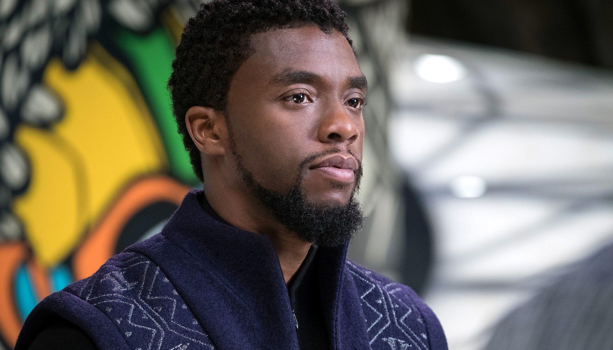

- On August 28, 2020, a Change.org petition was started, seeking to replace a Confederate monument in his hometown of Anderson with a statue of Boseman; it collected more than 50,000 signatures in less than a week, surpassing its original goal of 15,000 signatures.
- Henry McMaster, the Governor of South Carolina, ordered the Statehouse flags be lowered to half-staff on August 30 in honor of Boseman, who was born and raised in the state.
- ABC (which, like Marvel Entertainment, is owned by Disney) aired a commercial-free version of Black Panther, followed by a special about Boseman's life and work titled Chadwick Boseman — A Tribute for a King on the same day
- Also aired on August 30 was the 2020 MTV Video Music Awards; the ceremony was dedicated to Boseman.
- On September 24, 2020, Disney unveiled a mural, titled King Chad, by artist Nikkolas Smith dedicated to Boseman at Downtown Disney in Anaheim, California.
- In February 2021, another mural dedicated to Boseman was painted at Trilith Studios in Fayetteville, Georgia, by artist Brandon Sadler.
- Boseman is also memorialized in the 2020 video game Marvel's Spider-Man: Miles Morales. The game includes an after-credits message dedicating it in memory of Boseman, as well as a street called Boseman Way on 42nd Street; the number 42 bears significance in the Miles Morales universe as well as referring to Boseman's portrayal of Jackie Robinson. A Wakandan flag also appears.
- Amazon also made Black Panther comic titles available for free on its ComiXology platform in the wake of Boseman's death.
- On November 29, 2020, Marvel changed the studio's logo animation in the opening of Black Panther on Disney+ to include images of Boseman from the film, as well as his appearances in Captain America: Civil War, Avengers: Infinity War, and Avengers: Endgame, to honor what would have been Boseman's 44th birthday.